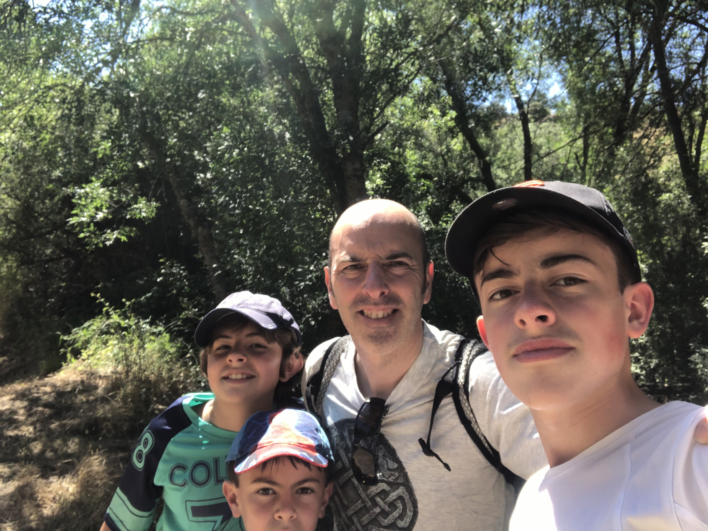
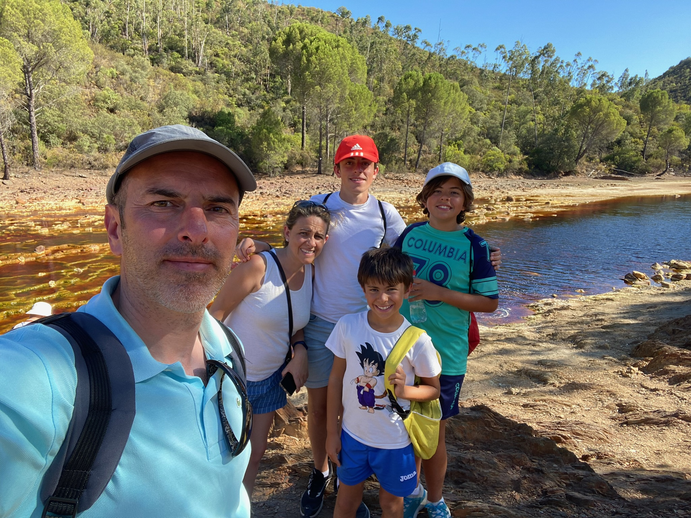
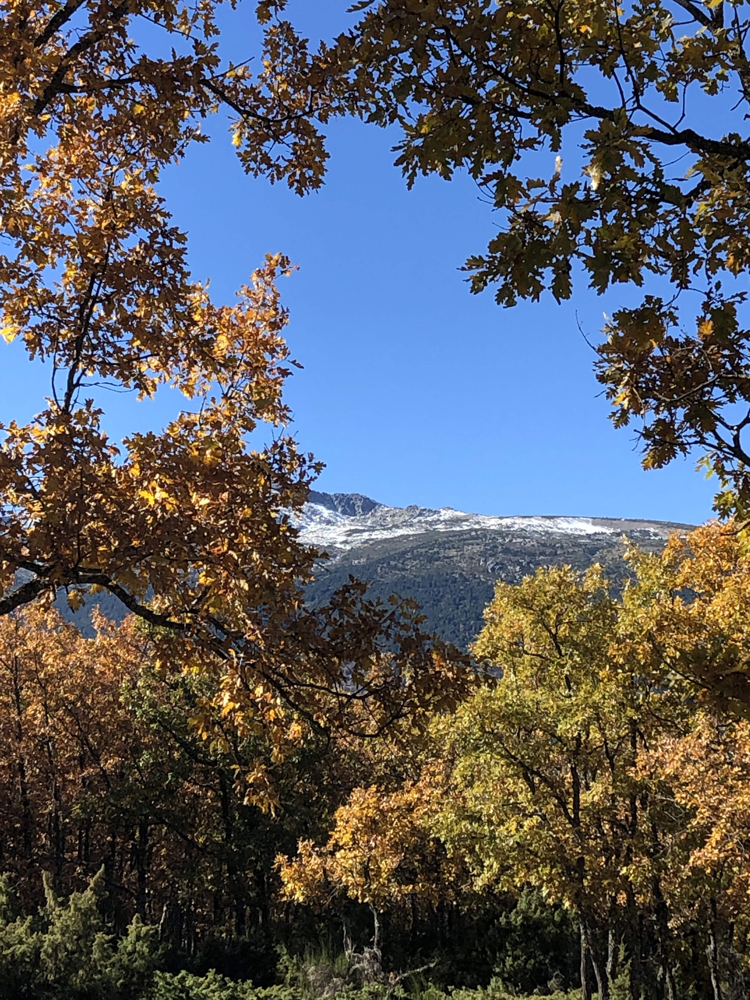
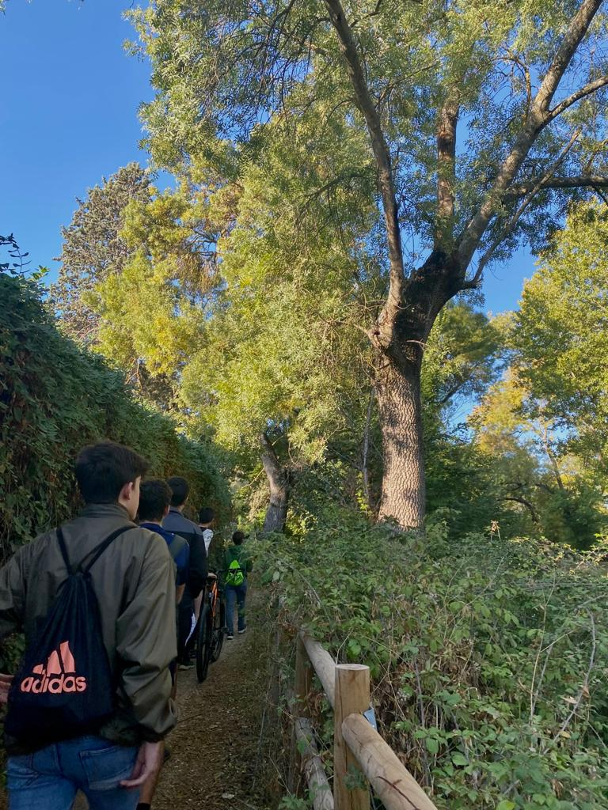

Senderismo
Reflexión:
Hago senderismo de vez en cuando con amigos o familia, generalmente por lugares como la sierra de Madrid, la Casa de Campo o los pinares de mi pueblo (Cabezuela). Aunque sea una actividad CAS más irregular, ya que no la realizo todas las semanas, me parece muy importante ya que me ayuda a ponerme en contacto con la naturaleza y lograr escapar un poco de los estudios y así relajar la mente. También me permite aprender mucho sobre diferentes plantas y otros organismos, sobre todo cuando lo hago con mi abuelo o mi tío, y descubrir la belleza de la naturaleza. Esta actividad, que llevo haciendo desde que tengo uso de conciencia, me ha llevado a hacer voluntariado enfocado en proteger estos lugares, como el de la organización ARBA.
Resultado de aprendizaje: nº 6.
Pruebas:
-

- 
- 
- 
- 